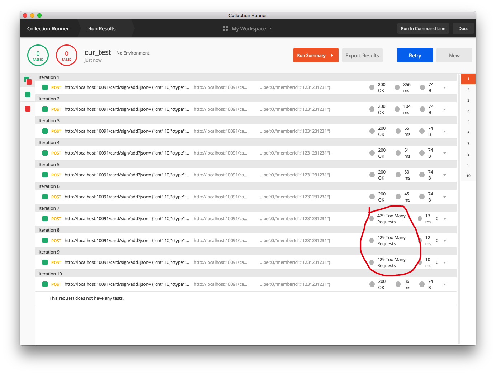
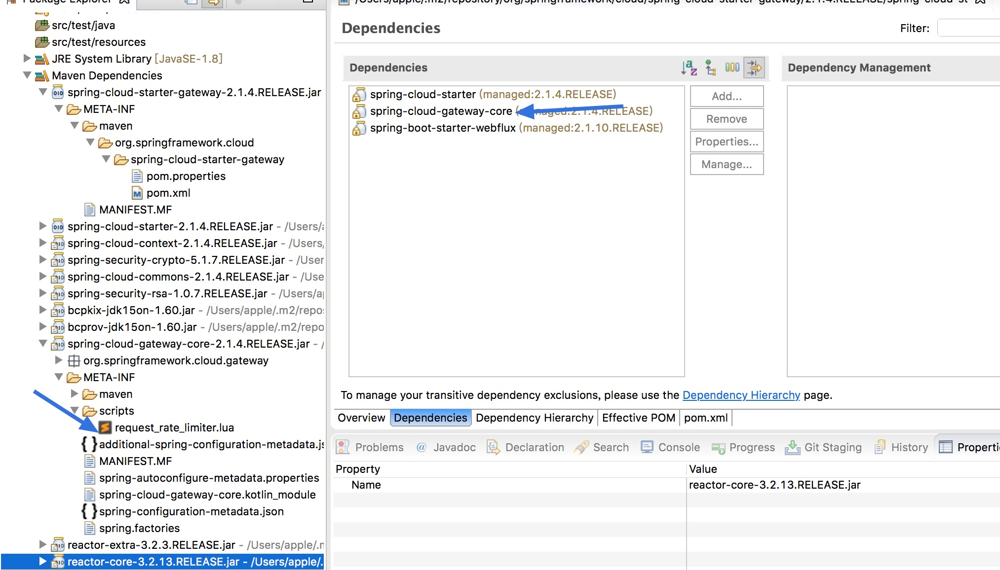
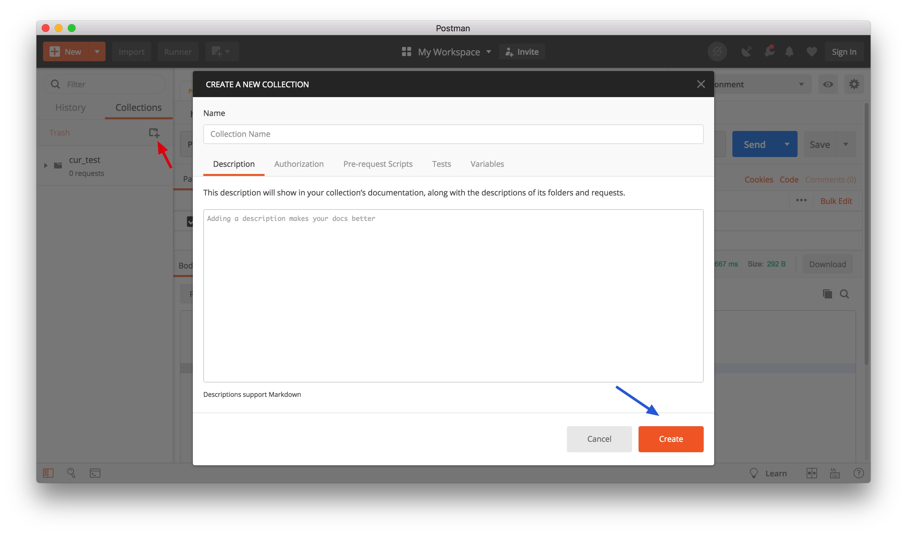
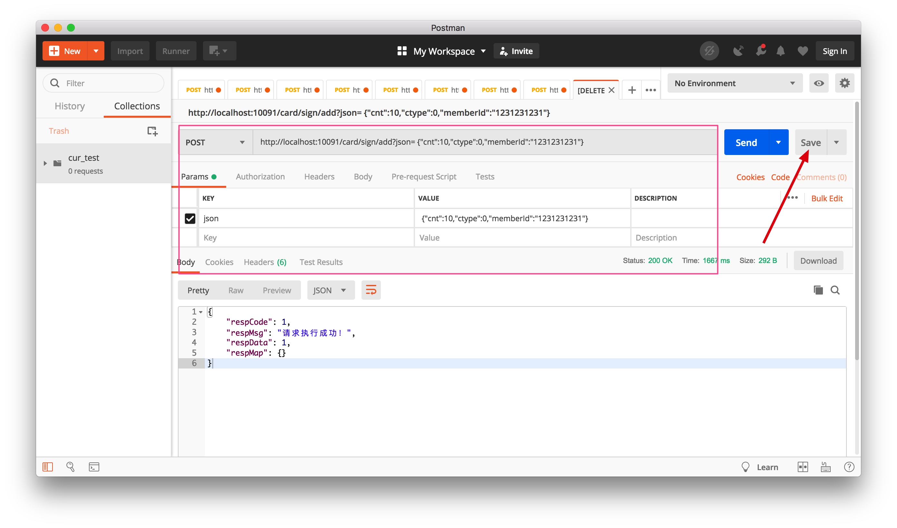
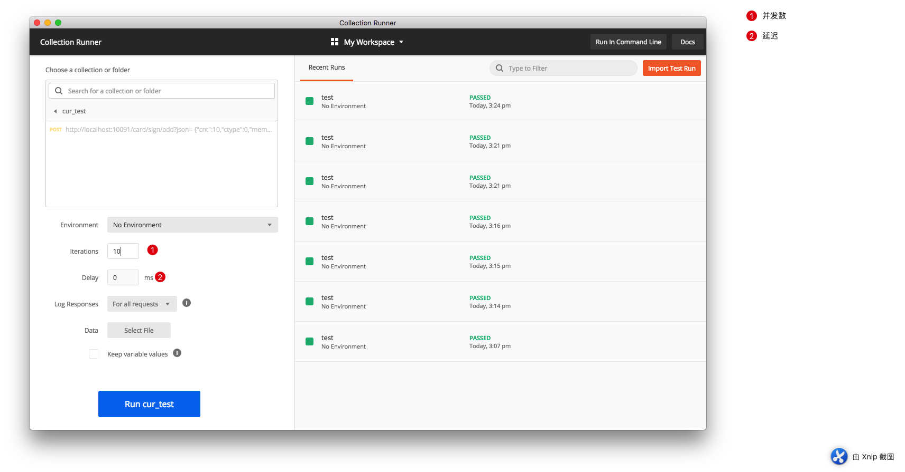

- 00 开篇导读.md.html
- 01 以真实“商场停车”业务切入——需求分析.md.html
- 02 具象业务需求再抽象分解——系统设计.md.html
- 03 第一个 Spring Boot 子服务——会员服务.md.html
- 04 如何维护接口文档供外部调用——在线接口文档管理.md.html
- 05 认识 Spring Cloud 与 Spring Cloud Alibaba 项目.md.html
- 06 服务多不易管理如何破——服务注册与发现.md.html
- 07 如何调用本业务模块外的服务——服务调用.md.html
- 08 服务响应慢或服务不可用怎么办——快速失败与服务降级.md.html
- 09 热更新一样更新服务的参数配置——分布式配置中心.md.html
- 10 如何高效读取计费规则等热数据——分布式缓存.md.html
- 11 多实例下的定时任务如何避免重复执行——分布式定时任务.md.html
- 12 同一套服务如何应对不同终端的需求——服务适配.md.html
- 13 采用消息驱动方式处理扣费通知——集成消息中间件.md.html
- 14 Spring Cloud 与 Dubbo 冲突吗——强强联合.md.html
- 15 破解服务中共性问题的繁琐处理方式——接入 API 网关.md.html
- 16 服务压力大系统响应慢如何破——网关流量控制.md.html
- 17 集成网关后怎么做安全验证——统一鉴权.md.html
- 18 多模块下的接口 API 如何统一管理——聚合 API.md.html
- 19 数据分库后如何确保数据完整性——分布式事务.md.html
- 20 优惠券如何避免超兑——引入分布式锁.md.html
- 21 如何查看各服务的健康状况——系统应用监控.md.html
- 22 如何确定一次完整的请求过程——服务链路跟踪.md.html
- 23 结束语.md.html
- 捐赠
16 服务压力大系统响应慢如何破——网关流量控制
由于服务粒度的不同以及数据包装因端而异的差异需求，我们在之前章节中引入了 BFF 层，调用端可以直接调用 BFF 层，由 BFF 层再将请求分发至不同微服务，进行数据组装。由于很多子服务都需要用户验证、权限验证、流量控制等，真的要在每个子服务中重复编写用户验证的逻辑吗？本章节就带你走近网关，在网关层统一处理这些共性需求。
为什么要引入网关
如果没有网关的情况下，服务调用面临的几个直接问题：
- 每个服务都需要独立的认证，增加不必要的重复度
- 客户端直接与服务对接，后端服务一旦变动，前端也要跟着变动，独立性缺失
- 将后端服务直接暴露在外，服务的安全性保障是一个挑战
- 某些公共的操作，如日志记录等，需要在每个子服务都实现一次，造成不必要的重复劳动
现有系统的调用结构如下图所示：

直接由前端发起调用，服务间的调用可以由服务注册中心调配，但前端调用起来就没这么简单了，特别是后端服务以多实例的形态出现时。由于各个子服务都有各自的服务名、端口号等，加之某些共性的东西（如鉴权、日志、服务控制等）重复在各子模块实现，造成不必要的成本浪费。此时，就亟需一个网关，将所有子服务包装后，对外统一提供服务，并在网关层针对所有共性的功能作统一处理，大大提高服务的可维护性、健壮性。
引入网关后，请求的调用结构演变成如下图：
可以看到明显的变化：由网关层进行统一的请求路由，将前端调用的选择权解放出来；后端服务隐藏起来，对外只能看到网关的地址，安全性大大提升；一些共性操作，直接由网关层实现，具体服务实现不再承担这部分工作，更加专心于业务实现。
本文带你将 spring-cloud-gateway 组件引入项目中，有同学会问，为什么不用 Zuul 呢？答案是由于组件发展的一些原因，Zuul 进入了维护期，为保证组件的完整性，Spring 官方团队开发出 Gateway 以替代 Zuul 来实现网关功能。
新增网关服务
引入 jar 时，注意 Spring Cloud Gateway 是基于 Netty 和 WebFlux 开发，所以不需要相关的 Web Server 依赖，如 Tomcat 等，WebFlux 与 spring-boot-starter-web 是冲突的，需要将这两项排除，否则无法启动。
<dependency>
<groupId>org.springframework.cloud</groupId>
<artifactId>spring-cloud-starter-gateway</artifactId>
</dependency>
<dependency>
<groupId>org.springframework.boot</groupId>
<artifactId>spring-boot-starter-actuator</artifactId>
</dependency>
<dependency>
<groupId>org.springframework.cloud</groupId>
<artifactId>spring-cloud-starter-alibaba-nacos-discovery</artifactId>
<version>0.2.2.RELEASE</version>
</dependency>
启动类与正常业务模块无异，在 application.yml 配置文件中进行初步配置：
server:
port: 10091
management:
endpoints:
web:
exposure:
include: '*'
#nacos config
spring:
application:
name: gateway-service
cloud:
nacos:
discovery:
register-enabled: true
server-addr: 127.0.0.1:8848
# config:
# server-addr: 127.0.0.1:8848
gateway:
discovery:
locator:
enabled: false #gateway 开启服务注册和发现的功能，并且自动根据服务发现为每一个服务创建了一个 router，这个 router 将以服务名开头的请求路径转发到对应的服务。
lowerCaseServiceId: true #是将请求路径上的服务名配置为小写
filters:
- StripPrefix=1
routes:
#一个服务中的 id、uri、predicates 是必输项
#member 子服务
- id: member-service
uri: lb://member-service
predicates:
- Path= /member/**
filters:
- StripPrefix=1
#card 子服务
- id: card-service
uri: lb://card-service
predicates:
- Path=/card/**
filters:
- StripPrefix=1
#resource 子服务
- id: resource-service
uri: lb://resource-service
predicates:
- Path=/resources/**
filters:
- StripPrefix=1
#计费子服务
- id: charging-service
uri: lb://charging-service
predicates:
- Path=/charging/**
filters:
- StripPrefix=1
#finance 子服务
- id: finance-service
uri: lb://finance-service
predicates:
- Path=/finance/**
filters:
- StripPrefix=1
routes 配置项是具体的服务路由规则配置，各服务以数组形式配置。id 用于服务间的区分，uri 则对应直接的调用服务，lb 表示以负载的形式访问服务，lb 后面配置的是 Nacos 中的服务名。predicates 用于匹配请求，无须再用服务的形式访问。
到此完成 Gateway 网关服务的简单路由功能已完成，前端直接访问网关调用对应服务，不必再关心子服务的服务名、服务端口等情况。
实现熔断降级
有服务调用章节，我们通过 Hystrix 实现了服务降级，在网关层面是不是可以做一个统一配置呢？答案是肯定的，下面我们在 Gateway 模块中引入 Hystrix 来进行服务设置，当服务超时或超过指定配置时，直接快速返回准备好的异常方法，快速失败，实现服务的熔断操作。
引入相关的 jar 包：
<dependency>
<groupId>org.springframework.cloud</groupId>
<artifactId>spring-cloud-starter-netflix-hystrix</artifactId>
</dependency>
配置文件中设置熔断超时时间设置：
#timeout time config，默认时间为 1000ms，
hystrix:
command:
default:
execution:
isolation:
thread:
timeoutInMilliseconds: 2000
编写异常响应类，此类需要配置在子服务的失败调用位置。
@RestController
@RequestMapping("error")
@Slf4j
public class FallbackController {
@RequestMapping("/fallback")
public CommonResult<String> fallback() {
CommonResult<String> errorResult = new CommonResult<>("Invoke failed.");
log.error("Invoke service failed...");
return errorResult;
}
}
#card 子服务
- id: card-service
uri: lb://card-service
predicates:
- Path=/card/**
filters:
- StripPrefix=1
#配置快速熔断失败调用
- name: Hystrix
args:
name: fallbackcmd
fallbackUri: forward:/error/fallback
若服务暂时不可用，发起重试后又能返回正常，可以通过设置重试次数，来确保服务的可用性。
#card子服务
- id: card-service
uri: lb://card-service
predicates:
- Path=/card/**
filters:
- StripPrefix=1
- name: Hystrix
args:
name: fallbackcmd
fallbackUri: forward:/error/fallback
- name: Retry
args:
#重试 3 次，加上初次访问，正确执行应当是 4 次访问
retries: 3
statuses:
- OK
methods:
- GET
- POST
#异常配置，与代码中抛出的异常保持一致
exceptions:
- com.mall.parking.common.exception.BusinessException
如何测试呢？可以代码中增加异常抛出，来测试请求是否重试 3 次，前端调用时，通过网关访问此服务调用，可以发现被调用次数是 4 次。
/* 这里抛出异常是为了测试spring-cloud-gateway的retry机制是否正常运行
* if (StringUtils.isEmpty("")) {
throw new BusinessException("test retry function");
}*/
实现服务限流
为什么要限流，当服务调用压力突然增大时，对系统的冲击是很大的，为保证系统的可用性，做一些限流措施很有必要。
常见的限流算法有：令牌桶、漏桶等，Gateway 组件内部默认实现了 Redis+Lua 进行限流，可以通过自定义的方式来指定是根据 IP、用户或是 URI 来进行限流，下面我们来一控究竟。
Spring Cloud Gateway 默认提供的 RedisRateLimter 的核心逻辑为判断是否取到令牌的实现，通过调用 META-INF/scripts/request*rate*limiter.lua 脚本实现基于令牌桶算法限流，我们来看看如何借助这个功能来达到我们的目的。

引入相应 jar 包的支持：
<!--基于 reactive stream 的redis -->
<dependency>
<groupId>org.springframework.boot</groupId>
<artifactId>spring-boot-starter-data-redis-reactive</artifactId>
</dependency>
配置基于 IP 进行限流，比如在商场兑换优惠券时，在固定时间内，仅有固定数量的商场优惠券来应对突然间的大量请求，很容易出现高峰交易的情况，导致服务卡死不可用。
- name: RequestRateLimiter
args:
redis-rate-limiter.replenishRate: 3 #允许用户每秒处理多少个请求
redis-rate-limiter.burstCapacity: 5 #令牌桶的容量，允许在一秒钟内完成的最大请求数
key-resolver: "#{@remoteAddrKeyResolver}" #SPEL 表达式去的对应的 bean
上文的 KeyResolver 配置项是用来定义按什么规则来限流，比如本次采用 IP 进行限流，编写对应的实现类实现此接口：
public class AddrKeyResolver implements KeyResolver {
@Override
public Mono<String> resolve(ServerWebExchange exchange) {
return Mono.just(exchange.getRequest().getRemoteAddress().getAddress().getHostAddress());
}
}
在启动类进行 @Bean 定义：
@Bean
public AddrKeyResolver addrKeyResolver() {
return new AddrKeyResolver();
}
到此，配置完毕，下面来验证配置是否生效。
测试限流是否生效
前期我们采用了 Postman 组件进行了不少接口测试工作，其实它可以提供模拟并发测试功能（如果要真实现真正的并发测试，建议采用 Apache JMeter 工具），不少用过的小伙伴尚未发现这一功能，这里就带大家一起使用 Postman 来发起模拟并发测试，操作步骤如下。
1. 建立测试脚本目录

2. 将测试请求放入目录

3. 运行脚本

4. 打开终端，进入 Redis 对应的库，输入 monitor 命令，监控 Redis 命令的执行情况。
点击上图“Run”按钮，查看 Redis 命令的执行情况。查看 PostMan 控制台，可以看到有 3 次已经被忽略执行。
到此，通过原生限流组件可以正常使用，通过 IP 是简单的限流，往往还会有更多个性化的需求，这个时候就需要定制来完成高阶功能。
实现跨域支持
时下流行的系统部署架构基本是前、后端独立部署，由此而直接引发另一个问题：跨域请求。必须要在网关层支持跨域，不然无法将请求路由到正确的处理节点。这里提供两种方式，一种是代码编写，一种是能过配置文件配置，建议采用配置方式完成。
代码方式
@Configuration
public class CORSConfiguration {
@Bean
public CorsWebFilter corsWebFilter() {
CorsConfiguration config = new CorsConfiguration();
config.setAllowCredentials(Boolean.TRUE);
//config.addAllowedMethod("*");
config.addAllowedOrigin("*");
config.addAllowedHeader("*");
config.addExposedHeader("setToken");
UrlBasedCorsConfigurationSource source = new UrlBasedCorsConfigurationSource(new PathPatternParser());
source.registerCorsConfiguration("/**", config);
return new CorsWebFilter(source);
}
}
配置文件配置
spring:
cloud:
gateway:
discovery:
# 跨域
globalcors:
corsConfigurations:
'[/**]':
allowedHeaders: "*"
allowedOrigins: "*"
# 为保证请求的安全，项目中只支持 get 或 post 请求，其它请求全部屏蔽，以免导致多余的问题
allowedMethods:
- POST
本文到此，网关中路由配置、熔断失败、请求限流、请求跨域等常见的共性问题都得到初步的解决，相信随着使用的深入，还有更多高阶的功能等待大家去开发使用。留一个思考题：除了 Spring Cloud Gateway 之外，你还知道其它中间件可以实现网关功能吗？不妨去调研一番。
© 2019 - 2023 Liangliang Lee. Powered by gin and hexo-theme-book.